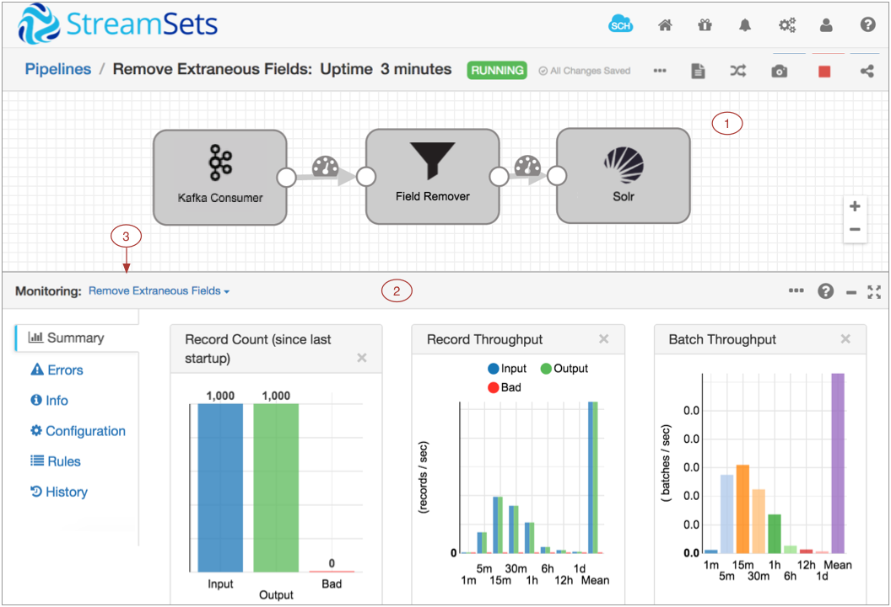

Pipeline Monitoring
Pipeline Monitoring Overview
When the Data Collector runs a pipeline, you can view real-time statistics about the pipeline, examine a sample of the data being processed, and create rules and alerts.
- View real-time stage and pipeline statistics
- View stage and pipeline error information, including error records for each stage
- Take and review a snapshot of data
- Configure rules and alerts
- View the pipeline history
For information about working with rules and alerts, see Rules and Alerts Overview. For additional information about monitoring multithreaded pipelines, see Monitoring.
Data Collector UI - Monitor Mode
In Monitor mode, you can use the Data Collector to view data as it passes through the pipeline.
The following image shows Data Collector in Monitor mode:

| Area / Icon | Name | Description |
|---|---|---|
| 1 | Pipeline canvas | Displays the pipeline that the Data Collector is
running. You can click a stage to view statistics about the stage. Click an unused section of the canvas to view pipeline statistics. Or, you can use the stage list to select the information that you want to view. |
| 2 | Monitor Panel | Displays statistics for the pipeline or selected stage by default. Displays the
following information on the specified tabs:
|
| 3 | Stage list | Lists the stages in the pipeline. Use to select the information that you want to view. |
| StreamSets Control Hub icon | Provides information about StreamSets Control Hub and lets you register this Data Collector with Control Hub. | |
| Home icon | Displays a home page with a list of pipelines and their statuses, allowing you to perform pipeline maintenance and navigate to individual pipelines. | |
| Package Manager icon | Displays the Package Manager which allows you to install additional stage libraries for a core Data Collector installation. | |
| Notifications icon | Displays notifications. | |
| Administration icon | Provides access to Data Collector configuration properties, directories, and log. Also allows you to shut down Data Collector. | |
| User icon | Displays the active user and the roles assigned to the user. Also allows you to log out of Data Collector. | |
| Help icon | Provides context-sensitive help based on the information in the panel. Allows you to
configure display settings and to specify whether to use a local or hosted version of the
help. Provides access to the REST API and the Data Collector version. |
|
| Link to a pipeline list | Link to a pipeline list on the Home page. Use to view a list of available pipelines, perform pipeline maintenance like starting or sharing a pipeline, and navigate to individual pipelines. | |
| More icon | Provides additional actions for the pipeline. Use to pause monitoring. | |
| View Log icon | Displays the Data Collector log. The equivalent to selecting Administration > Logs. | |
| Auto Arrange icon | Arranges the stages in the pipeline. | |
| Snapshot icon | Captures a snapshot of data passing through the pipeline so you can review the data. | |
| Stop icon | Stops the pipeline. | |
| Share icon | Shares the pipeline with users and groups. Use to configure pipeline permissions. | |
| Stream Monitoring icon | Select to view or configure a data rule or alert. | |
| Inspect Data icon | Indicates when alerts are configured on the stream:
|
For information about working with pipelines on the Home page, see Data Collector UI - Pipelines on the Home Page.
For information about configuring pipelines, see Data Collector UI - Edit Mode.
For information about data preview options, see Data Collector UI - Preview Mode.
Viewing Pipeline and Stage Statistics
When you monitor a pipeline, you can view real-time summary and error statistics for the pipeline and for stages in the pipeline.
By default, the Data Collector UI displays pipeline monitoring information when it runs a pipeline. You can select a stage to view the statistics about the stage. Similarly, you can view error information for the pipeline and its stages.
- Summary
-
For a pipeline, displays the record count for the pipeline, record and batch throughput, batch processing statistics, and heap memory usage. For a pipeline started with runtime parameters, displays the parameter values that the pipeline is currently using.
For a stage, displays record and batch throughput, batch processing statistics, and heap memory usage.Tip: You can hover over different parts of the charts to view exact numbers.Note that the record and batch throughput graphs are calculated using an exponential moving average, weighing more heavily toward the most recent values and exponentially reducing the effect of old data. For more information, see https://en.wikipedia.org/wiki/Moving_average#Exponential_moving_average.
- Error
- For a pipeline, displays histograms for the number of error records by five minute decay and the number of error records by stage since the pipeline started.
Monitoring Errors
When you monitor a pipeline, you can view error statistics for the pipeline and each stage. You can also view a sampling of the error records.
The Errors tab in the Monitor panel displays pipeline errors by default:

Stage-Related Errors
You can view the errors related to each stage. Stage-related errors include the error records that the stage produces and other errors encountered by the stage.
To view stage-related errors, select the stage from the stage list. Or, click the stage in the canvas. The Errors tab of the Monitor panel displays the following tabs:

- Error Records
-
Displays a sample of error records with related error messages, as well as the count and an error histogram.
- Stage Errors
- Displays a list of stage errors as well as the count and an error histogram. Stage errors are operational errors, such as an origin being unable to create a record because of invalid source data.
Snapshots
A snapshot is a set of data captured as it moves through a running pipeline. You can capture snapshots when you monitor a pipeline.
View a snapshot to verify how the pipeline processes data. Like data preview, you can view how snapshot data moves through a pipeline stage by stage or across multiple stages. You can drill down to review the values of each record to determine if the stage or group of stages transforms data as expected.
Unlike data preview, you cannot edit data to perform testing when you review a snapshot. Instead, you can use the snapshot as source data for data preview. You might use a snapshot for data preview to test the pipeline with production data.
Failure Snapshots
A failure snapshot is a partial snapshot that occurs automatically when the pipeline stops due to unexpected data. You can view the failure snapshot to troubleshoot the problem.
A failure snapshot captures the data in the pipeline that was in memory when the problem occurred. As a result, it includes the data that caused the problem and might include other unrelated data, but does not include data in each stage like a full snapshot.
Standalone pipelines generate the failure snapshot by default. Pipelines in cluster or edge execution mode do not generate failure snapshots.
You can configure standalone pipelines to skip generating the failure snapshot by clearing the Create Failure Snapshot pipeline property.
Viewing a Failure Snapshot
After a standalone pipeline generates a failure snapshot, you can review the snapshot to determine the cause of the error.
To view a failure snapshot, in the stopped pipeline, click the More icon, then select Snapshot. In the Snapshots dialog box, find the failure snapshot and click View.
In the Snapshots dialog box, failure snapshots use the following naming convention:
Failure at <time of failure>.
When the failure snapshot displays, you can click through the stages. Stages that encountered no errors will typically not display any data. The stage that contains data should be the stage that encountered the errors.
For example, say a pipeline stops with the following error:
com.streamsets.pipeline.api.StageException: SCRIPTING_06 - Script error while processing batch:
javax.script.ScriptException: <error message>You can click through the pipeline starting from the origin, looking for the problematic stage and finding no data. But from the error message, you can tell that there was a problem with a scripting processor. So you can look immediately at the scripting processor. There, you find that the offending data enters the processor but does not exit:

You can then examine the data that caused the errors and edit the pipeline as needed.
Capturing and Viewing a Snapshot
You can capture a snapshot of data when you monitor a pipeline.
After you capture a snapshot, you can view the snapshot data stage by stage or through a group of stages, like data preview. You can also delete snapshot data or use it as source data for data preview.
Downloading a Snapshot
When needed, you can download a snapshot. You might download a snapshot from a production Data Collector so you can review it on a development Data Collector. Or you might download a snapshot to use the Dev Snapshot Replaying origin to read records from the downloaded file.
When you download a snapshot, it downloads to the default download location on the Data Collector machine.
Downloaded snapshots use the following naming convention: <pipeline
id>_<snapshot name>.json.
The pipeline ID is the original title for the pipeline followed by a UUID.
OracletoGoogleCloud_f116d713-372c-4105-ad03-e042c47dc72b_snapshot1513289740553.jsonAWSa81167ba-be03-4f74-8028-2f5b0439e6a9_Failure_6c7912ee-c4f7-4aee-b67f-0b0e587bc91e.jsonDeleting a Snapshot
Viewing the Run History
You can view the run history of a pipeline and a summary of each run when you configure or monitor a pipeline.
- The pipeline status
- The time the pipeline started or stopped
- Related messages
- Access to each run summary
Click the History tab in the pipeline properties or monitor panel to view the run history. The following image shows a sample run history:

Viewing a Run Summary
You can view a run summary for each run of the pipeline when you view the pipeline history.
- Input, output, and error record count for the pipeline.
- Input, output, and error record count for each stage.
- Runtime statistics for the pipeline, including the number of batches processed, the time the last record was received, and the source offset when available.
To view a run summary, on the History tab of the pipeline, click View Summary.